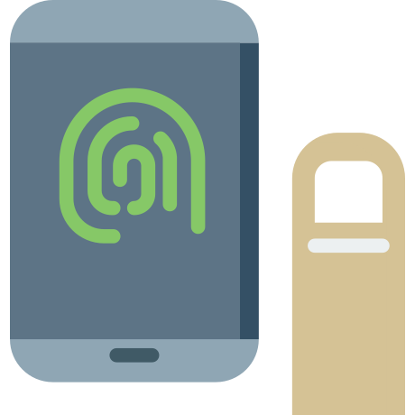
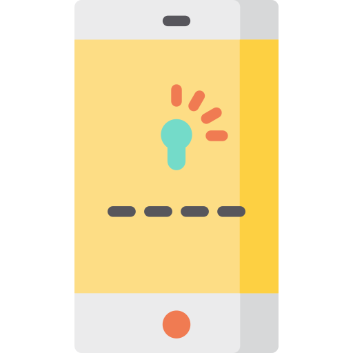

امـنـیـت رایـانـه
برای فعالان مدنی و روزنامهنگاران
{ امنیت تلگرام }
ایرانسک
IranSecurity
IranSec
IranSec2
این محتوا با و تحت گواهی منتشر میشود (بیشتر بخوانید)
امنیت تلگرام
مروری بر مهمترین تنظیمات امنیتی
--> بهار ۱۴۰۲نکتهای درمورد
امنیت تلگرام
•
یکی از شیوههای متعارف در هک شناسۀ تلگرام دسترسی به آن از طریق دستگاه دیگری است که به آن
Device
میگویند. برای جلوگیری از دسترسی غیرمجاز باید تأیید دومرحلهای
(Two-Step Verification)
را فعال کرد.
نکتهی مهم این است که بعضی از کنشگران تایید دو مرحلهای را با گذاشتن رمز روی برنامۀ تلگرام
(Passcode Lock)
اشتباه میگیرند. اولی امکان اتصال از
هیچ دستگاهی
را
(که رمز دوم ندارد)
نمیدهد و دومی تنها اجازۀ باز کردن تلگرام روی
همان دستگاهی
که این رمز تعریف شده است را نمیدهد.
•
شیوۀ دیگر، ترغیب کاربران به استفاده از نسخههای مبتنی بر تلگرام است؛ چه به اسم آزادی دسترسی به اینترنت و چه با ادعای سالمسازی آن. در چنین شرایطی، خطر دزدیدهشدن و دستکاری اطلاعات، بسیار بالاست.
برای مثال اگر کسی برای تلگرام روی گوشی سامسونگ خود Passcode بگذارد اما تایید دو مرحلهای نگذارد، آنگاه یک هکر (در شرایطی خاص) میتواند به تلگرامش دسترسی داشته باشد، اما اگر در همین وضعیت گوشیاش به دست هکر بیافتد امکان دسترسی به تلگرام بدون داشتن Passcode (با اغماض) را نخواهد داشت. توجه کنید که اگر وی تلگرام خود را روی تبلتش نیز فعال کرده باشد اما Passcodeی را برای تلگرام روی تبلتش فعال نکرده باشد، هکر میتواند با در دست داشتن تبلت به محتوای تلگرام روی تبلت دسترسی داشته باشد، در حالی که همچنان روی گوشی سامسونگ این امکان وجود ندارد.
چند نکتۀ مهم تلگرامی
- در سال ۱۳۹۶ تلگرام اعلام کرد که سرورهای CDN خود را به ایران منتقل کرده است. اگر این ادعا درست باشد، جای نگرانی خاصی نیست اما بهتر است در ساحل امن بمانید و برای کارهای حساس از تلگرام استفاده نکنید. مسئله این است که وقتی سرورها در ایران باشند به این معنی است که تابع قوانین ایران خواهند بود.
- در سال ۱۳۹۷ تلگرام در چند کشور منجمله ایران مسدود و سرویسهای مبتنی بر تلگرام برای دور زدن فیلترینگ تولید شدند؛ هیچ یک از آنها امن نیستند.
- بهصورت مداوم Active Sessions تلگرام خود را بررسی کنید. این مسئله به شما اطمینان میدهد که کسی غیر از شما به تلگرامتان وصل نیست.
- تلگرام لیست مخاطبان و پیامها را روی سرور خود ذخیره میکند. این بدان معنی است که اگر کسی بهصورت غیرمجاز به تلگرام شما وصل شود، فهرست مخاطبان و پیامهایتان را خواهد داشت.
- تلگرام گزینهی Secret Chat دارد که براساس ادعای توسعهدهندگان آن امنیت را بهصورت نقطه-به-نقطه تامین میکند. اگر از آن استفاده نکنید، امنیت نقطه-به-نقطه فعال نیست، یعنی امنیت تلگرام با نرمافزارهای دیگر مثل وایبر تفاوت معناداری ندارد.
چند نکتۀ مهم تلگرامی
- کانالهای تلگرامی بسیار محبوباند، عضویت شما در آنها برای گردانندگان قابل دیدن است؛ به جای عضویت در کانالهای دردسرساز میتوانید به صورت مرتب به آنها سر بزنید.
- عضویت شما در گروههای تلگرامی برای همهی اعضای گروه قابل مشاهده است، در صورتی که عضویت شما در کانالهای تلگرامی تنها برای مدیران کانال قابل مشاهده است.
- در تلگرام میتوانید پیامهای فرستاده شده را حذف/ویرایش کنید که برای گیرنده نیز حذف/ویرایش شود. ویرایش پیام باید ظرف ۴۸ساعت انجام شود اما محدودیتی برای حذف کردن پیام ندارید.
- اگر کانال تلگرامی دارید و نگران لو رفتن هویت خود هستید، شناسۀ جدیدی بسازید و با آن شناسه کانال خود را مدیریت کنید.
- اگر خطر از دست دادن شناسۀ تلگرامتان بالاست، همیشه در کانالهای تحت مدیریت خود، یک شناسۀ دیگر را نیز مدیر کنید که اگر شناسۀ شما هک شد، کانال شما نیز از بین نرود.
- اگر امنیت برایتان مهم است به سیگنال یا وایر کوچ کنید. این دو برنامه امنیت نقطه-به-نقطه برای مکالمههای متنی، صوتی و تصویری بدون ضعف امنیتی در پشتی (Backdoor) را تضمین میکنند.
نسخههای مبتنی بر تلگرام
پس از مسدود شدن تلگرام در ایران، موج عرضۀ برنامههای مبتنی بر تلگرام در داخل و خارج از کشور شدت گرفت. قاعدۀ کلی این است که هیچیک از آنها امن نیستند؛ چه مدعی گردش آزاد اطلاعات باشند، چه قصد پاکسازی محتوای نامطلوب! را داشته باشند، چه مورد حمایت نهادهای امنیتی باشند و چه کشورهای حامی آزادی و دموکراسی.
تصویر پسزمینه نشان میدهد که اطلاعات چگونه بین سرورهای چنین شرکتهایی رد و بدل میشود؛ سرورهای آنها امکان شنود و دستکاری محتوای دریافتی/ارسالی را دارند.
ورود به تنظیمات
تــلــگــرام
برای اعمال تنظیمهای امنیتی، به Settings مراجعه کنید. از فهرست نمایشدادهشده، Privacy and Security را انتخاب کنید. Two-Step Verification , Auto-Delete Messages, Passcode Lock و Devices چهار گزینۀ مهم امنیتی در Securityاند.
تنظیم ورود دو مرحلهای
تــلــگــرام

برای فعالسازی، Two-Step Verification را انتخاب کنید. سپس یک رمز مناسب (رمز خوب، رمزی طولانی و ترکیبی از حروف بزرگ، کوچک، عدد و علائم نگارشی است) انتخاب کنید. رمز را مجدد ثبت کنید.
ورود دو-مرحلهای جلوی ورود بدون اطلاع به شناسهی شما را میگیرد.
Password Hint را برای یادآوری رمز اصلیتان انتخاب کنید. رمزی که در مرحله قبل ثبت کردید را وارد نکنید.
همچنین میتوانید از تعیین آن صرفنظر کنید.
نکتهای درمورد بازیابی رمز ورود دومرحلهای
•
برای بازیابی رمز درصورت فراموشی، تلگرام این امکان را به شما میدهد که از ایمیل استفاده کنید.
•
میتوانید از این مرحله عبور کنید اما توجه داشته باشید که درصورت فراموشی رمز، هیچ راهی برای بازیابی آن وجود نخواهد داشت.
•
باتوجه به اینکه استفاده از ایمیل شخصی برای این کار چندان امن نیست، توصیه میشود اکانت جدیدی
(ایمیل فیک)
در گوشی یک فرد امن ساخته و از آن استفاده کنید.
ایمیلتان را وارد کنید. کد تأیید بلافاصله به ایمیل ارسال میشود. کد را وارد کنید. پس از پایان مراحل، پیغام مرتبط با فعالسازی ورود دومرحلهای از طرف تلگرام به شما ارسال میشود.
حذف خودکار پیامها در
تــلــگــرام
وارد Auto-Delete Messages شده و از بین گزینههای موجود، زمانبندی مناسب حذف خودکار پیامها را انتخاب کنید. همچنین میتوانید از بخش Set Custom Time خودتان تعیین کنید که هر چند روز/هفته/ماه/سال پیامهای شما بهطور خودکار حذف شوند. توجه کنید که این تنظیمات فقط برای چتهایی فعال میشود که از این به بعد آغاز خواهید کرد؛ برای فعال شدن حذف خودکار برای چتهای فعلی، از گزینۀ آبی رنگ پایین استفاده کنید و چتهایی که میخواهید این تنظیمات در آنها اعمال شوند را انتخاب کنید.
روش دیگر تنظیم حذف خودکار برای هر چت دلخواه، استفاده از منوی صفحۀ پروفایل فرد است. وارد Auto-Delete شده و زمانبندی دلخواه خود را انتخاب یا دستی تنظیم کنید.
همچنین میتوانید از طریق گزینه Disable آن را غیرفعال کنید.
رمز گذاشتن روی برنامۀ
تــلــگــرام

رمز تلگرام از ورود بیگانه به تلگرام در نبودتان جلوگیری میکند. Passcode Lock با ورود دومرحلهای فرق میکند. حتی با فعالکردن آن، باید برای هر دستگاه رمز انتخاب کنید. یک رمز چهاررقمی انتخاب کنید. سپس در قسمت Auto-lock مدتزمان قفل خودکار را تعیین کنید. همه گزینههای امنیت شناسۀ تلگرام شما فعال شده است.
جلوگیری از گرفتن اسکرینشات در
تــلــگــرام
وارد Passcode Lock شده و رمزتان را وارد کنید. با خاموش کردن گزینه Show Content تا وقتی داخل برنامه نیستید محتوای تلگرام شما قابل مشاهده نیست، و هنگامی که داخل برنامه هستید هم برنامه به شما اجازۀ گرفتن اسکرینشات نمیدهد.
بررسی دسترسیها به
تــلــگــرام
یکی از شیوههای هکرها، اتصال به شناسۀ تلگرام قربانی است. بهطور مرتب صفحۀ Devices را بررسی کنید. دسترسی دستگاههای متصل غیر آشنا را قطع کنید. گزینه Terminate All sessions دسترسی همه دستگاههای دیگر (جز دستگاهی که با آن این کار را انجام میدهید) را قطع میکند.
نکتهای درمورد نشستهای فعال
•
بعد از ورود به شناسۀ تلگرام با یک دستگاه جدید، تا ۲۴ساعت اجازۀ اعمال تنظیمات امنیتی را با آن دستگاه نخواهید داشت.
•
در نسخۀ دسکتاپ تلگرام، امکان استخراج پیامها وجود دارد؛ پس
نشستهای فعال در دسکتاپها
را جدی بگیرید.
پاک کردن حساب کاربری
تــلــگــرام
برای پاککردن حساب کاربری تلگرام، به آدرس https://my.telegram.org مراجعه کنید. گزینۀ Delete Account را انتخاب کنید. شماره موبایلتان را وارد کنید. پس از آن کدی به تلگرامتان ارسال میشود. با ثبت کد، حساب کاربری شما پاک میشود.
نیاز به کمک دارید؟
پرسشهای خود را با ما در میان بگذارید. support@iransec.org t.me/IranSec_Botحق مؤلف و تشکر
این نوشته بهواسطه تجربۀ چندساله در ارائه مشاورۀ امنیتی به سازمانها، کنشگران مدنی، روزنامهنگاران و شهروندان تهیه شده است. هرچند که تمام تلاشمان را کردهایم که متن حاضر بهروز و بینقص باشد، اما امکان ایراد وجود دارد. پس با آغوش باز پذیرای نقدها و پیشنهادها شما هستیم. لازم است یادآوری کنیم که این جزوهی امنیتی با گواهی کریتو کامنز (قابل استفادۀ غیرتجاری، تخصیص و سهم یکسان) منتشر شده است. به حتم برای هر شکل از استفادهی تجاری از این مجموعه نیاز به کسب اجازه است.
در این پروژۀ آموزشی از محتوای دیگران با گواهی قابلانتشار و تغییر استفاده شده است. از آن جمله میتوان به ارائهگر reveal.js، قلمهای لالهزار و وزیر و بی-یکان، شکلکهای ion و awesome و flat icons استفاده شده. در هر جای پروژه که عکسی استفاده شده منبع آن ذکر شده است. اگر منبعی از قلم افتاده است خوشحال میشویم که آن را گوشزد کنید.